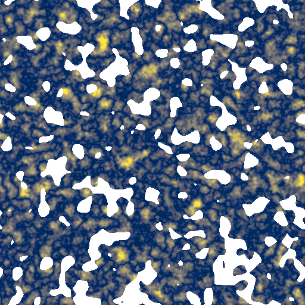

ILLUSTRATIVE MOCK DATA · synthetic imagery · fictional paths, hashes and numbers
VVesqira
Orion HI · baseline vs candidate · research board
View as
You can see: 3 published previews (pinned, read-only). You cannot see: raw FITS, HPC, credentials, other project items. Review link expires 2026-11-18 (14 days). It shows pinned rev 7; later revisions are not visible to you.
Newer revision available: source run vgt_run_2026-10-30T09-41Z has rev 8 (unpublished). The review still shows pinned rev 7.
Figure 1 · Axial orientation, baseline vs candidate (synthetic illustration)
A Baseline. Axial angle (deg), 0°≡180°.source: run r1 · pinned rev 7
B Candidate. Axial angle (deg), 0°≡180°.source: run r2 · pinned rev 7

C Δ smallest axial angle (deg, 0–90). Masked pixels carry no value.source: r1 vs r2 · pinned rev 7 (fig. rev 3)
Caption: Axial orientation from two VGT runs on the same WCS grid; resolution match unverified. Axial statistics use the doubled-angle convention. Imagery is synthetic.
Access denied: raw data is not part of this review
The link you followed points to a raw FITS dataset. Review links only open the three published previews you were given.
Next step:
Open a published preview from the ledger, or
ask the owner to publish a specific preview or plane for you.